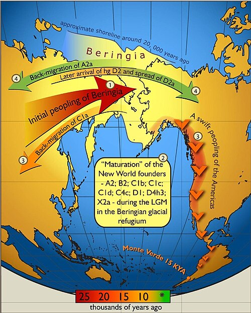
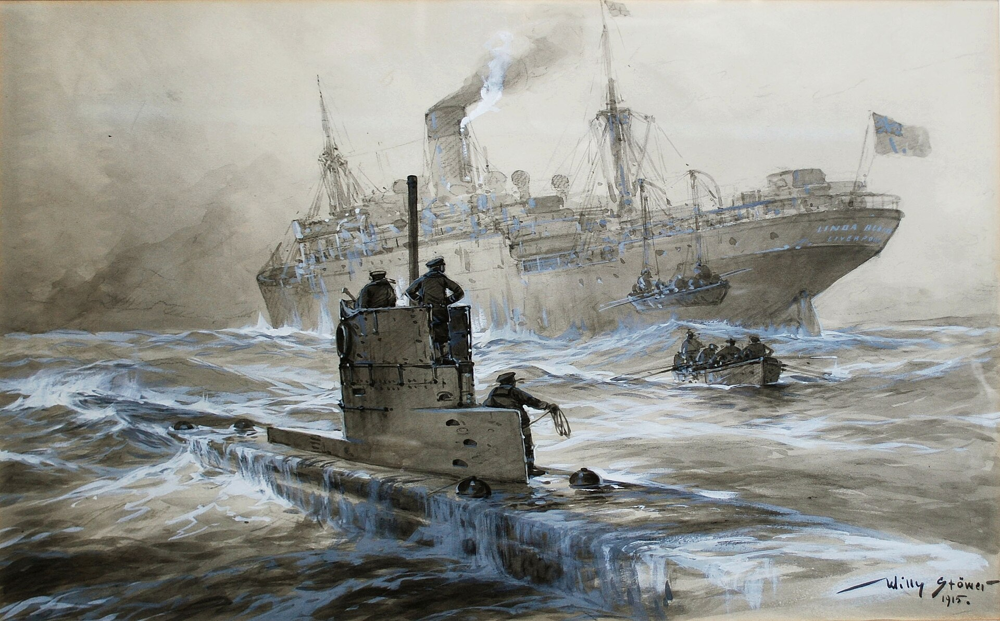
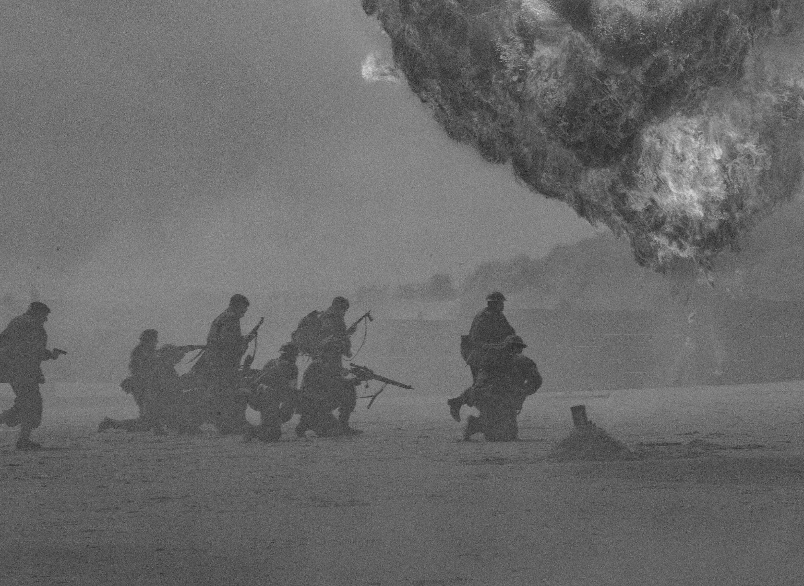
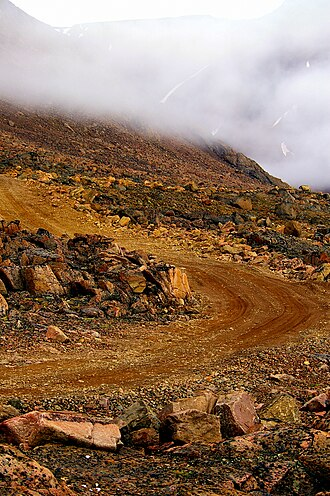

History Of Canada
Spans From
Indigineous civilization > European
Contacts > a modern world state.

30,000–15,000 BC
The First Migration Through Beringa
First peoples cross into North America
from Asia, establishing rich
and diverse Indigenous societies.

5,000 BC - 4,000 BC
Paleo-Inuit
A later migration brought the ancestors
of the Paleo-Inuit from Siberia settling
northern coasts of Canada & Greenland.
AI Illustration of Paleo-Inuit migration to Canada from Siberia in 1,905 CE

1000 CE
First Migration From Europe
Norse Explorers, reached Canada and
colonized parts of Newfoundland making
the first known European contact.
AI Illustration of the First Migration From Europe in 1000 CE

1,497 CE
John Cabot
was an Italian explorer, sailed under the
commission of King Henry VII of England
making landfall in Newfoundland.
AI Illustration of John Cabot landfall in Newfoundland in 1,497 CE

1,534 CE
Jacques Cartier
Explores the Gulf of St. Lawrence
and claims the land for France
using the local word kanata.
AI Illustration of Jacques Cartier exploration in 1,534 CE

1,608 CE
Samuel de Champlain
founds Québec City as a permanent
French settlement and the capital
of New France.
AI Illustration of Samuel de Champlain settlement in 1,534 CE

1,670 CE
Hudsons Bay Company
The British Crown grants a charter
to the Hudson's Bay Company,
expanding the fur trade.
AI Illustration of Hudsons Bay Company getting charter in 1,670 CE

1,759 CE
Plains of Abraham
British forces defeat the French
at the Battle of the Plains of Abraham ,
in Qubec.
AI Illustration of the conflict at plains of Abraham in 1,759 CE

1,763 CE
The Treaty of Paris
formally cedes New France to British
control, turning into a British colony
and ends French authority on Qubec.
AI Illustration of ceding New France to British in 1,759 CE

1,791 CE
The Constitutional Act
divides Quebec into two divisions
Upper Canada English-speaking,
Lower Canada French-speaking.
AI Illustration of Quebec division into two parts in 1,759 CE

1812-1814 CE
U.S Invasions
Canadian and British forces
successfully repel
the U.S. invasion.
AI Illustration of US invasion in 1,812 - 1814 CE

1867 CE
Canada Formed
Unites Ontario, Quebec,
Nova Scotia and New Brunswick
into the federal Dominion of Canada.
AI Illustration of of formation of Canada Federal Dominion in 1,867 CE

1870-1873 CE
Provinces Join the federation
Manitoba, British Columbia,
and Prince Edward Island
join the new confederation.
AI Illustration of provinces joining the federation in 1,870-1,873 CE

1885 CE
The Pacific Railway
The transcontinental Railway
is completed linking
the country from coast to coast.
AI Illustration of The Pacific Railway in 1,885 CE

1905 CE
More Join the federation
Alberta and Saskatchewan
join the federal Dominion
of Canada as Provinces.
AI Illustration of Alberta and Saskatchewan joining in 1,905 CE

1914-1918 CE
World War I
Canada fights alongside the
Allies establishing a strong
international identity.

1931 CE
Legislative independence
Statute of Westminster grants
Canada legislative independence
from the British Parliament.

1939-1945 CE
World War II
Canada plays a major role
in World War II and experiencese
a massive postwar economic boom.
1982 CE
Constitution Act
Queen Elizabeth II signs the Act
Patriating Canada constitution and
establish the Charter of Freedom.

1999 CE
Third territory
Nunavut is established
as third territory, separating
from the Northwest Territories.
This is a non-commercial site
Illustrative Imagery are sourced via open-access
historical repositories, public domain archives & AI.